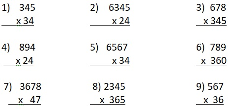

EXPLORE
If one kaing holds 272 atises, about how many atises are there in 21 kaing?
How will you solve for the answer to the given problem?
The phrase “about how many” does not ask for an actual answer but an estimate. You will estimate the product to solve for the answer.
Study the solution below.
Round each of the factors to its highest place value; then multiply the rounded numbers.
272------->300
x 21------->x20
6000
Answer: There are about 6000 atises in 21 kaing.
Get Moving
Estimate the product. Then, find the actual product and compare it with the estimated product. Do this in your notebook.
Apply Your Skills
A. Estimate each product. Then, compare the two estimated products. Write the correct symbol >, <, or = in the circle.
1. 3456 x 34 ________ 2734 x 36
2. 457 x 563 ________ 435 x 532
3. 7291 x 36 ________ 7554 x 41
B. Read and solve.
1. Will there be more of fewer zeros in the product when you multiply 30 x 800 than when you multiply 50 x 800?
Explain.
2. How many zeros will be in the product of 500 and 700?
What is the product?
3. Forty-three Grade 4 pupils of Odizee School of Achievers paid Php3,860 for the Boy Scouts’ Jamboree in Baguio City. Estimate how much money was cancelled.